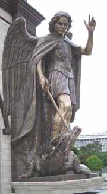

|
KEY SYMBOLS
St.Michael the Archangel
The patron saint of the parish is St.Michael the Archangel. He is described as the "chief of princes" and as the leader of the heavenly forces in their triumph over Satan and his followers. St. Michael is mentioned four times in Holy Scripture including in the Book of Revelations. He is also mentioned in the Jewish and Islamic holy books.
In the Roman Catholic Church, St. Michael has four distinct roles. Firstly, he is the supreme enemy of Satan and the fallen angels. Secondly, he is the Christian angel of death. St.Michael's third role is weighing souls on judgement day. Finally, he is the protector and guardian of the Church since apostolic times.
In art, St. Michael is often depicted as a fully armed angelic warrior, standing over the dragon or serpent whom he pierces with a lance.Prayers and devotions to St.Michael include the popular Prayer to St. Michael (see below) and the Chaplet of St.Michael. Appearances of St.Michael have been reported at Monte Gargano (Italy), Normandy (France) and Garabandal (Spain).
The name Michael means "who is like God". The feast day of St. Michael is celebrated on September 29.
Prayer to St. Michael:-
| Holy Michael Archangel, defend us in the day of battle. Be our safeguard against the wickedness and snares of the devil. May God rebuke him, we humbly pray; and may you,O Prince of the heavenly hosts, by the power of God, thrust down to hell Satan and all evil spirits who wander through the world to keep it in bondage. AMEN. |
|---|
Parish Logo
The white, yellow and black bands represent the colours of the Perak State flag identifying the locality of the parish.
The St. Michael's Cross is depicted by its colour which is red and the symmetrical arms of the cross with rounded ends.
1890 is the year in which the parish was founded.
The bougainvillea featured below the cross and year of founding is the official flower of the city of Ipoh, in which the parish is situated.
 |
|  |
|